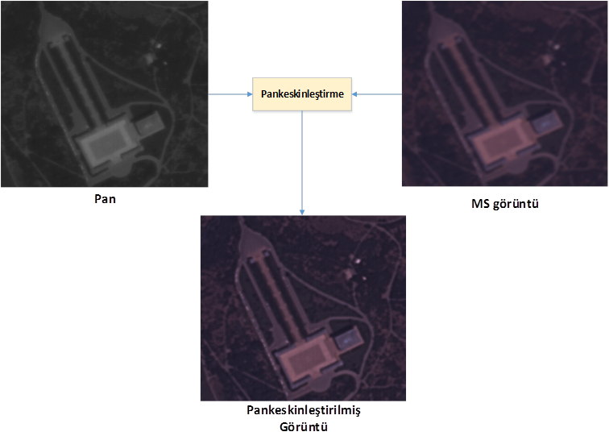
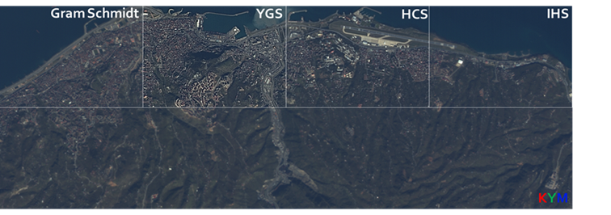
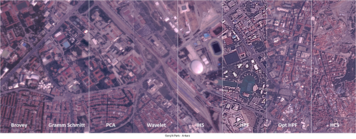
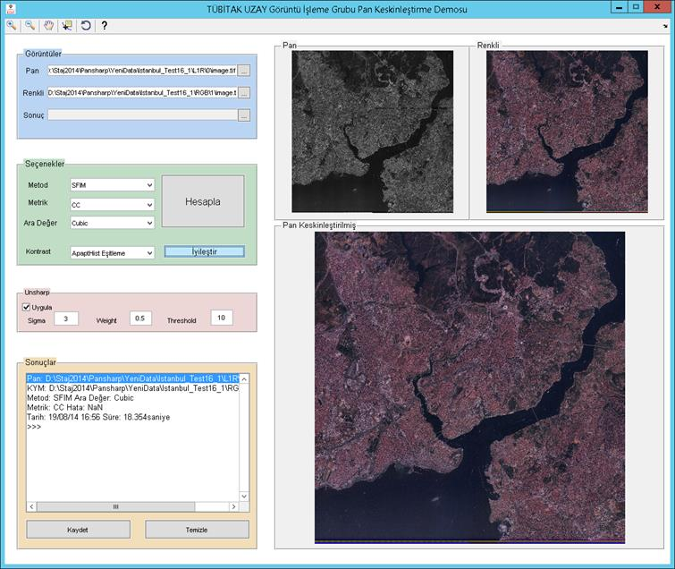

Pan keskinleþtirme, uydu
görüntülerinde bulunan düþük çözünürlüðe sahip renkli bantlarýn yüksek
çözünürlüklü pan bandý kullanýlarak
çözünürlüðünün
arttýrýlmasýný saðlayan veri bütünleþtirme (fusion) yöntemleridir.
RASAT Uydu görüntüleri Hiperküre Renk Uzayý (HCS) yöntemi ile iyileþtirilmektedir.
Ayrýca Unsharp temelli genel bir pansharp yöntemi geliþtirilmektedir.

Teke, M.; Seyfioðlu, M.S.; Aðcal, A;Gürbüz,S.Z.,
"RASAT Uydu Görüntülerinin Optimal Pankeskinleþtirilmesi"
IEEE 22. Sinyal Ýþleme ve Ýletiþim Uygulamalarý Kurultayý, vol., no., pp.1967-1970,23-25 Nisan 2014

Teke, M.,San, E., Koç, E., “Unsharp based Pansharpening of Göktürk-2 Satellite Imagery”, Draft
Draft Bildiri – Poster – Sunum


Not: Kaynak kodlar ile ilgili yapýlan çalýþmalarda lütfen ilgili site ve yayýnlara atýfta bulununuz.
Kodlar araþtýrma amaçlýdýr, kodlarý GPLv3 lisansýna göre kullanabilirsiniz.